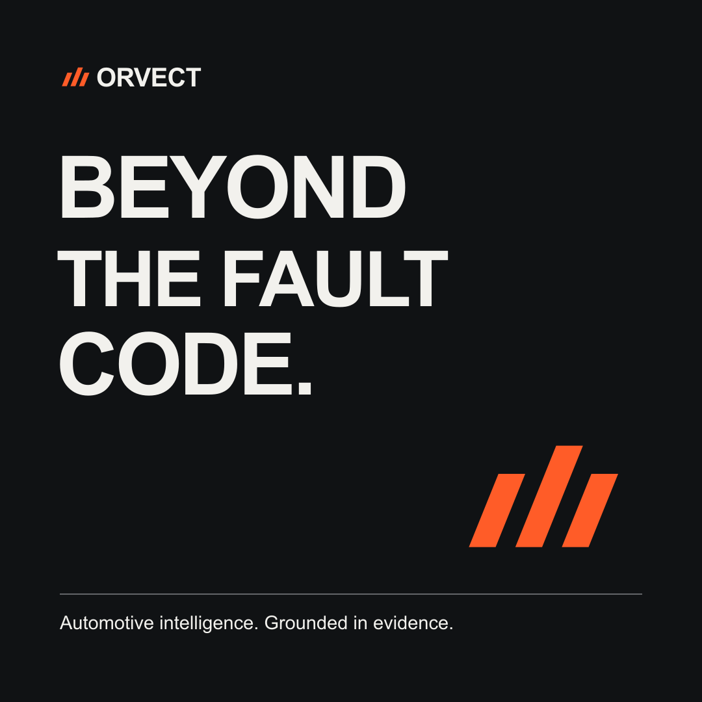
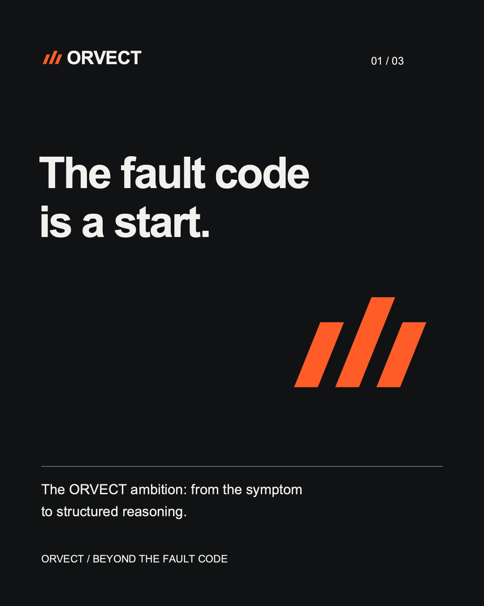
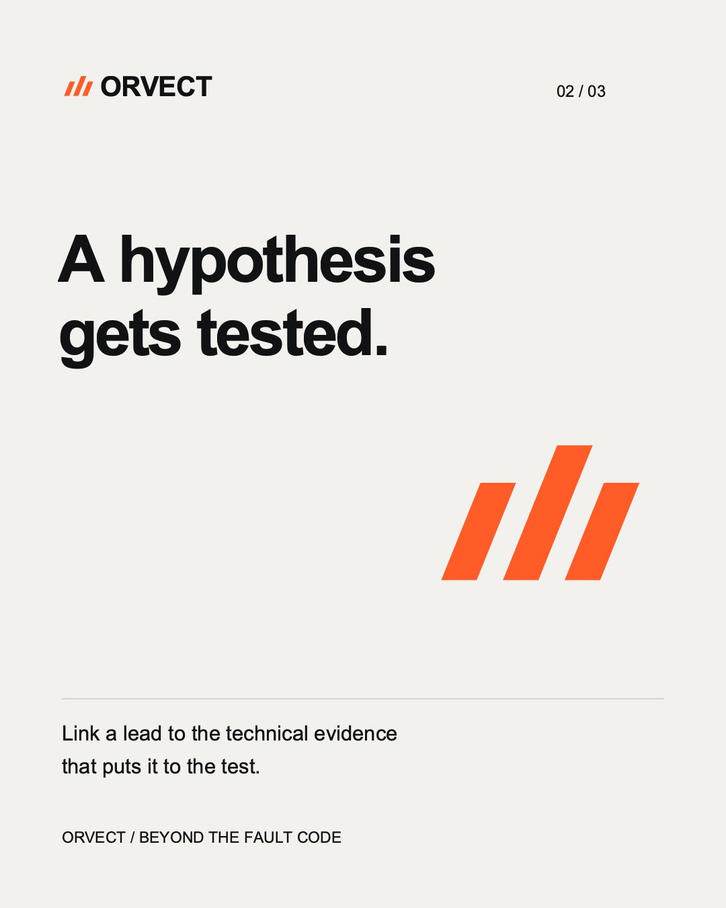
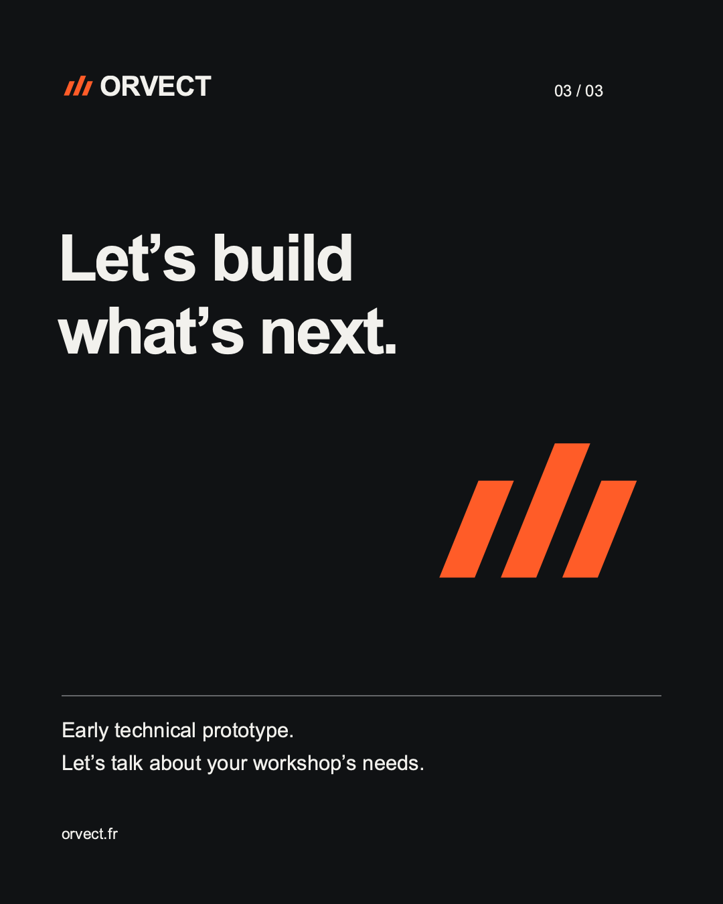
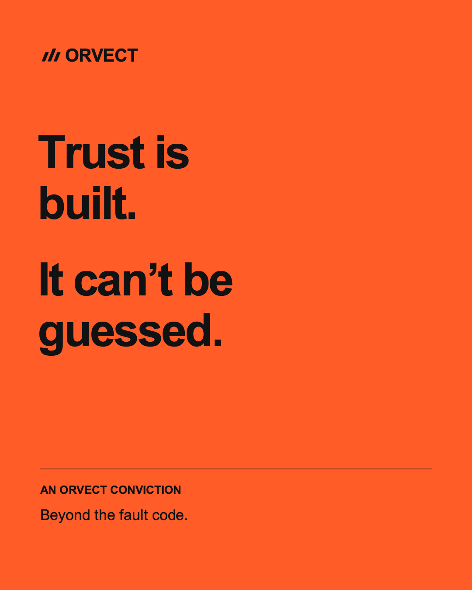
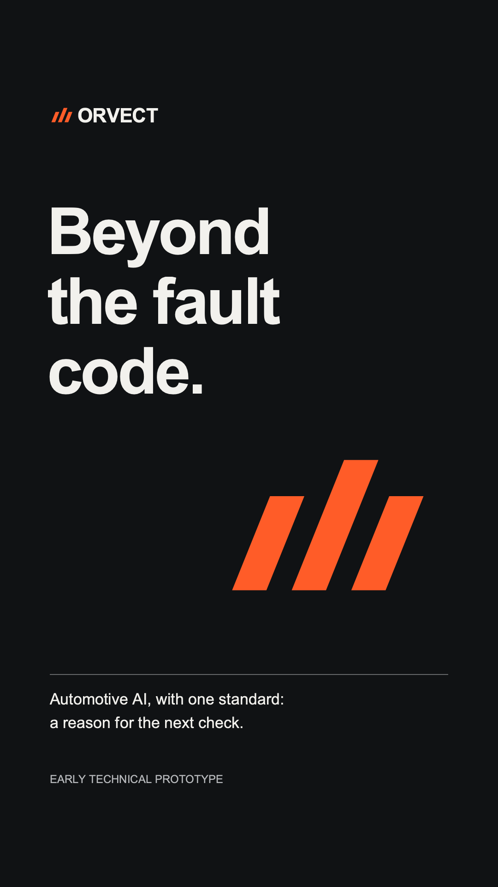
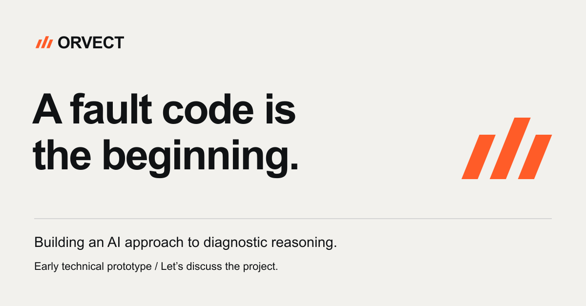
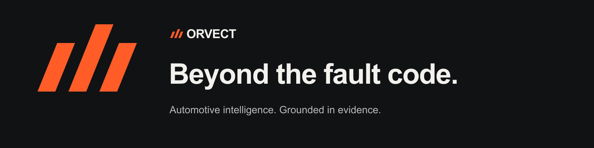

Kit presse
ORVECT, en images.
Logos, couleurs, visuels de marque, captures du prototype et photos du fondateur. Libres d’utilisation pour parler d’ORVECT, sans modification du logo.
Le logo
Trois traits obliques et le nom ORVECT. Gardez de l’espace autour, et le symbole seul pour les petits formats.


Les couleurs et la typographie
- Encre#101214
- Papier#F2F1ED
- Orange ORVECT#FF5C28
- Orange profond#C33D0E
Space Grotesk. Au-delà du code défaut.
Les visuels de marque
Version française


English version
















Le produit
Captures du prototype ORVECT, avec des données fictives.


Le fondateur : Nolann Petri
Nolann Petri, fondateur et CEO d’ORVECT, étudiant à la Stockholm School of Economics. Voir l’équipe.


Contact presse
Pour une interview, une démonstration ou d’autres visuels : nolann.orvect@gmail.com